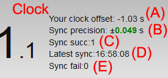

Navigation: Clock.Zone / About
About clock.zone
As I mentioned on home page, my main goal was to build a website where you can find real exact time.
Most of the applications, widgets or websites are showing time from your device clock. But can you trust to clock built in your computer or mobile phone? Sometimes it may be late or ahead (few seconds or even minutes). Or maybe time zone is not set properly, or you forgot to set the DST time, etc.
All analog and digital clocks, widgets on clock.zone shows time from our dedicated server synchronised with atomic clock.
On clock.zone you can find exact times for time zones world wide too. You can set this clock to run in background or place it on your website as widget.
Summary

(A): Offset of clock in your computer, (ahead or late, in seconds). If this number is very big (example 3605.4 s), check settings of your default time zone or DST.
(B): Precision of synchronisation (time since request is sent and received). If this number is too big (due the slow internet connection in request moment), shown time may have this delay.
(C): counter of succesiful synchronisation (just informative)
(D): Latest synchronisation (just informative)
(E): counter of fail synchronisation (no problem, site will try later again and again..)
Technical details
In moment when you request the content of the page with clock, exact time is sent together with html code (milliseconds since Epoch time).
Offset is calculated (between time in your device and our server time). From that moment, your clock is used to calculate the past time. BUT every 10-60 seconds AJAX is used in background to check is your time still accurate. What this means? For example, if your device clock is late 5 minutes per day (that's very much), in 1 minute delay will be only 0.2 seconds. And every minute AJAX will try to synchronise in background the time with clock.zone server. What happens if internet connection is lost? In that case, AJAX will continue to try again, when internet connection is back, clock will be accurate again.
There are few technical problems: One is your internet speed. There is a delay since our server send the exact time and your computer get the data. To predict the precision, there is a small piece of code, that measure the time from request sending and receieving (B) client->server->client. The real delay is only traveling time from server->client, but in script running on your computer (JS), I can only measure start of the request where client->server time is included too.
Another technical problem is the temporary load of your device in moment, when it measure the time and process the information.
Oh, yes, and there is always existing problem, compatibility with internet browsers. I tried to use solutions, where main digital and analog clock scripts supports Firefox 3.0+, Safari 3.0+, Chrome 5.0+, Opera 9.5+ and Internet Explorer 6.0+. Some clocks in "more clocks" category working only with new modern browsers, but those pages are only for fun (but of course, they show exact times too).
Demonstration of clock.zone precision
Support the webmaster
If you like clock.zone, please, support me. That's one small click for man, one giant spiritual support for me :-)
Your feedback is welcome.